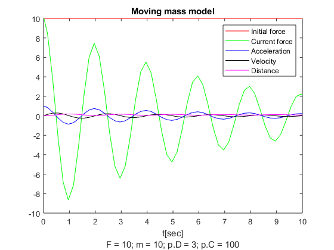

Contents
clear
clc
a)
playtime

b)
exercise_3b
clear
clc
p.TSim = 10;
p.K = 5;
p.T = 4;
sim('exercise_3b', [0 p.TSim]);
showPlot(scope0T, scope0D, "Clock", 1);
showPlot(scope1T, scope1D, "Sinus", 2);
showPlot(scope2T, scope2D, "Random Number", 3);
showPlot(scope3T, scope3D, "Repeating Sequence Stair", 4);
showPlot(scope4T, scope4D, "Step", 5);
showPlot(scope5T, scope5D, "Signal Generator", 6);

c)
exercise_3c
clear
clc
p.TSim = 10;
p.F = 10;
p.m = 10;
p.D = 3;
p.C = 100;
runThis(p, 7)
p.F = 40;
runThis(p, 8)
p.F = 10;
p.m = 20;
runThis(p, 9)
p.m = 10;
p.D = 0.1;
runThis(p, 10)
p.D = 3;
p.C = 1337;
runThis(p, 11)
p.F = 1;
p.m = 10;
p.D = -3;
p.C = 100;
runThis(p, 12)
p.F = 10;
p.m = 5;
p.D = 5;
p.C = -2;
runThis(p, 13)
function runThis(p, plotNr)
sim('exercise_3c', [0 p.TSim]);
figure(plotNr)
y1 = scope;
plot(y1.time, y1.signals(1).values,'r', ...
y1.time, y1.signals(2).values,'g', ...
y1.time, y1.signals(3).values,'b', ...
y1.time, y1.signals(4).values,'black', ...
y1.time, y1.signals(5).values,'m');
title("Moving mass model");
legend("Initial force", "Current force", "Acceleration", "Velocity", "Distance");
str = "F = " + p.F + "; m = " + p.m + "; p.D = " + p.D + "; p.C = " + p.C;
xlabel({"t[sec]";str});
end
function showPlot(scopeT, scopeD, name, plotNr)
figure(plotNr);
y1 = scopeT;
subplot(2,1,1)
plot(y1.time, y1.signals(2).values,'b', ...
y1.time, y1.signals(1).values,'r');
title(name + " - transfer function");
legend('K=5','T=4');
xlabel("t[sec]");
y2 = scopeD;
subplot(2,1,2)
plot(y2.time, y2.signals(2).values,'b', ...
y2.time, y2.signals(1).values,'r');
title(name + " - differential equation");
legend('K=5','T=4');
xlabel("t[sec]");
end

